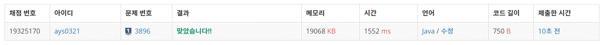

3896번 소수 사이 수열
문제요약
연속한 소수 p와 p+n이 있을 때, 그 사이에 있는 n-1개의 합성수(소수나 1이 아닌 양의 정수)는 길이가 n인 소수 사이 수열라고 부른다.
양의 정수 k가 주어졌을 때, k를 포함하는 소수 사이 수열의 길이를 구하는 프로그램을 작성하시오.
public class Baekjoon3896 {
public static void main(String[] args) {
Scanner sc = new Scanner(System.in);
int t = sc.nextInt();
boolean[] a = new boolean[1299710];
for(int i = 2; i <= 1299709; i++) {
a[i] = true;
}
for(int i = 2; i*i <= 1299709; i++) {
for(int j = i*i; j <= 1299709; j+=i) {
a[j] = false;
}
}
for(int z = 0; z < t; z++) {
int k = sc.nextInt();
if(a[k]) {
System.out.println(0);
}else {
int c = 0;
int n = 1;
for(int i = 2; i < 1299709; i++) {
c++;
if(!a[i]) {continue;}
if(n < k & k < i) {break;}
if(a[i]) {c = 0;}
n = i;
}
System.out.println(c);
}
}
}
}
에라토스테네스의 체를 활용하여 발견한 소수의 배수들을 모두 지우면서 소수 사이의 수열을 찾았다.
